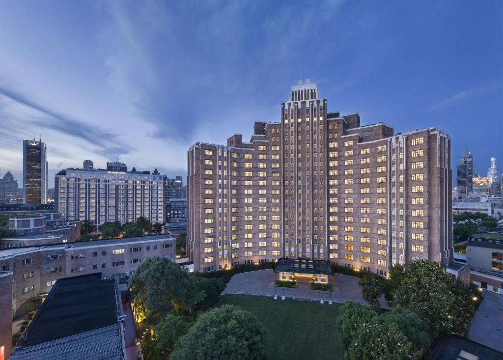
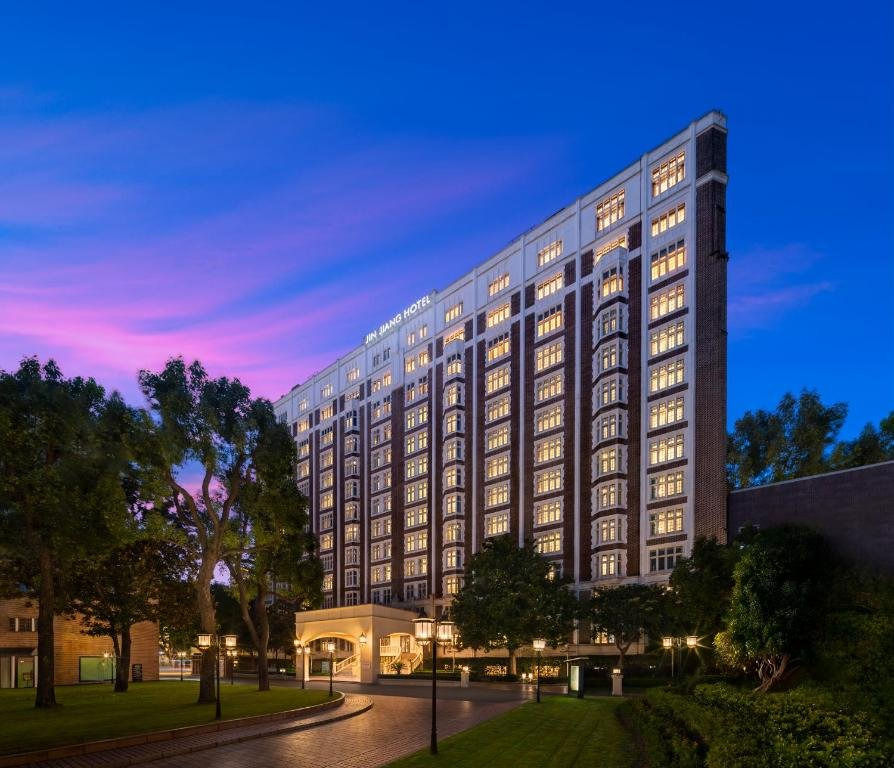
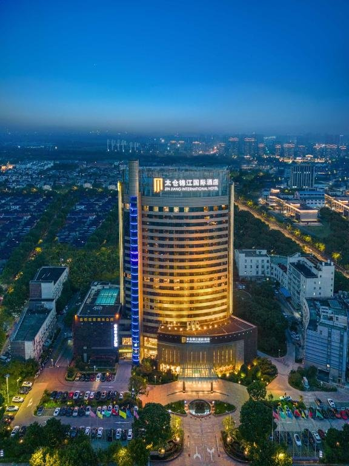

J Hotel Shanghai Tower
Pudong, ShanghaiAi piani alti di una delle torri più alte del mondo: camere e suite sullo skyline di Pudong e sul fiume Huangpu.
- Camere e suite con vista panoramica
- Ristorazione e bar ai piani alti
- Spa e area benessere

Alberghi dove la cura orientale per il dettaglio incontra standard di servizio internazionali.
Dal grattacielo che sfiora le nuvole al palazzo che racconta un secolo di città.
Ai piani alti di una delle torri più alte del mondo: camere e suite sullo skyline di Pudong e sul fiume Huangpu.

Un indirizzo storico: sale di rappresentanza e giardini raccontano la Shanghai del Novecento con il comfort di oggi.

Il portafoglio internazionale riunisce marchi per viaggi d’affari e di piacere in molte città.
Jin Jiang nasce a Shanghai, crocevia di culture, con una idea precisa di accoglienza: attenzione prima della richiesta.
Il tè all’arrivo, la cucina regionale cinese accanto ai piatti internazionali, un personale che conosce la città e sa raccontarla. Intanto procedure, comfort e sicurezza rispondono agli standard che i viaggiatori si aspettano ovunque.
Tocca una foto per ingrandirla.